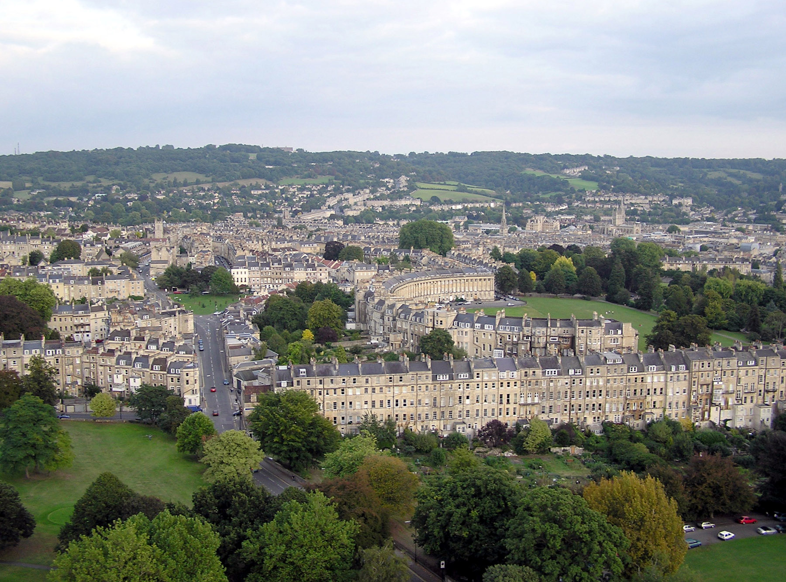

Bath math walk
home
maths
route
about
Welcome to the Bath Math Walk!
The Bath maths walk, is a cool way to show people the maths all around them. It is a walking route all around the most famouse and interesting parts of Bath, exploring them mathmaticaly.
Start exploring
